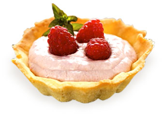

Кремовий малиновий тарт
 2 столові ложки цукру 150 грам масла 1 жовток яйця Мука 250 грам Розпушувач Малина 700 грам Крохмаль 0.5 столових ложок Вода 250 млКористь фруктів
-
Сучасний ритм життя зачасту не залишає людині достатньо часу на правильне харчування. Фрукти є важливим джерелом харчових речовин, таких як вітаміни, мінерали, фібри та антиоксиданти. Їх вживання може мати значний позитивний вплив на здоров'я людини. Тому, заради здоров'я, не варто нехтувати ягодами та фруктами, почати уникати швідливу їжу. Безліч людей не усвідомлюють, що з фруктів теж можна і треба робити багато смачних і водночас корисних страв.
-
Фрукти є також важливим джерелом фібр і антиоксидантів. Фібри, що містяться у фруктах, допомагають зменшити ризик розвитку серцево-судинних захворювань та діабету, підтримують здоров'я шлунково-кишкової системи та зменшують ризик виникнення запалення. Антиоксиданти ж знижують ризик розвитку ракових захворювань та захищають клітини від пошкоджень.
-
Погане харчування також може вплинути на наш зовнішній вигляд. Висока кількість жирів, солі та цукру може спричинити набряки, підвищення ваги та пошкодження шкіри. Інші проблеми, пов'язані з поганим харчуванням, включають зниження енергетичного рівня, погіршення сну та зниження рівня продуктивності.
- Нещодавно додані рецепти
- Сік з броколі
- Суфле з персика
- Суп з пастернаку
- Дієтичний хліб з висівками
- Безшлютеновий торт
- Популярні рецепти
- Фруктовий салат з йогуртом
- Баноновий мілкшейк
- Чай з полуниці та м'яти
- Овочі на пару з м'ясом
- Соєвий бургер